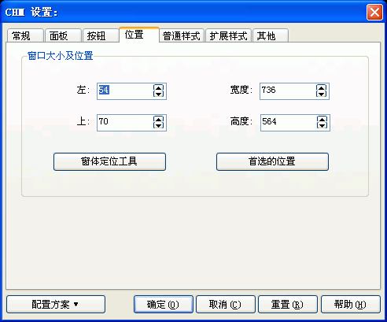

您可以通过在编译设置对话框里按"CHM设置..."按钮, 然后在"CHM设置"对话框里选取"位置"跳格看到这个对话框。关于这个对话框的使用请看下面的具体描述.

这里决定CHM被打开时的初始位置。
您在这里设置的位置将会是屏幕的绝对位置，而不是相对位置，如果您的显示器分辨率很高，并把CHM的位置设为您的整屏大小，那么在分辨率低的屏幕上将无法看到CHM的全貌 - 因为CHM的有些部分已经跑到屏幕之外了。由于是屏幕的绝对位置，所以建议您不要把值设的过大。如果希望整屏显示，可以按照600*480、800*600或1024*768来设置。如果您觉得使用您的CHM文件的用户使用的多为15寸显示器，则您在这里设置的CHM初始位置不应该超过800*600。
窗口大小及位置 / 左:
窗口大小及位置 / 宽度:
决定CHM被打开时的宽度。
窗口大小及位置 / 上:
决定CHM被打开时与显示器顶部边的距离。
窗口大小及位置 / 高度:
决定CHM被打开时的高度。
窗口大小及位置 / 窗体定位工具:
由您手工调节CHM的大小.
窗口大小及位置 / 首选的位置:
使用程序默认的CHM位置。
| 版权所有 © 2000-2007 国华软件 保留全部权利. |